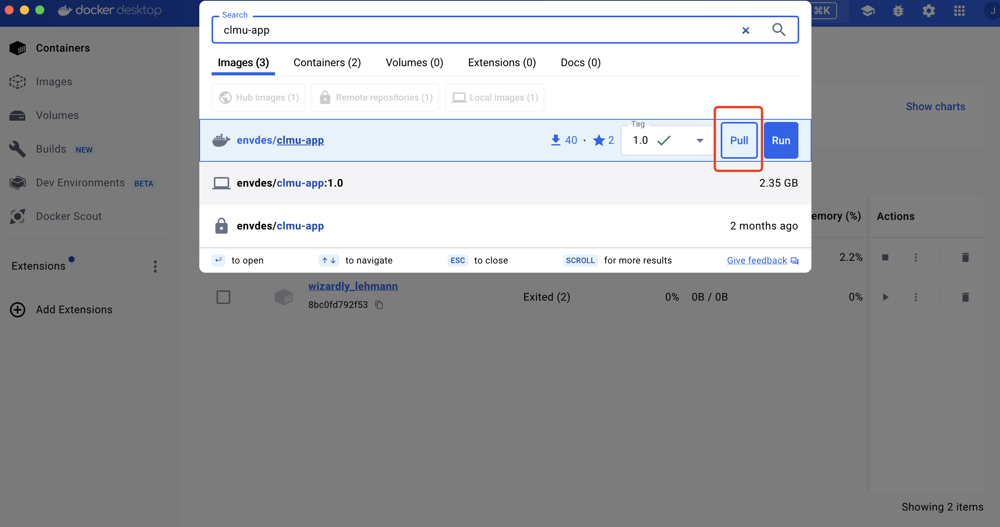
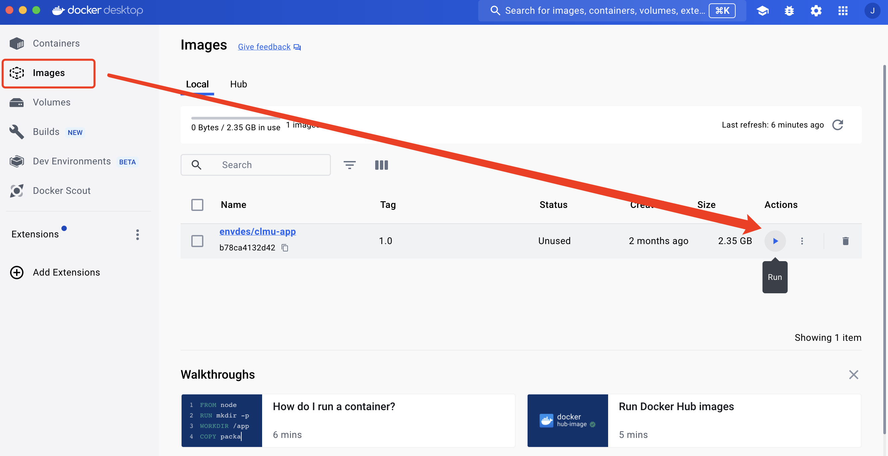
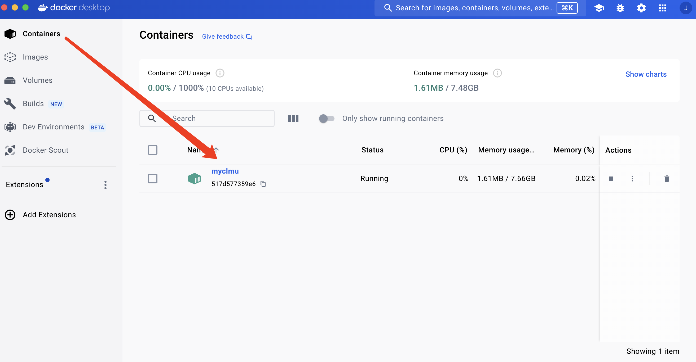
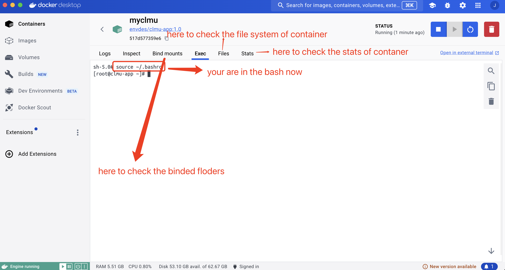

Run CLMU-App
There are three ways to run the container. (If you have Apptainer/Singularity, no need to do follows)
1 pyclmuapp
Note: install docker before using pyclmuapp
The inputfolder, outputfolder, logfolder, and scriptfolder will be checked in the current working directory.
If the folder does not exist, it will be created.
User can specify the folders by using the inputfolder, outputfolder, logfolder, and scriptfolder parameters.
Inputfolder, outputfolder, logfolder, and scriptfolder parameters are optional.
Two way to create a docker container for pyclmuapp
1 Bash command
$ pyclmuapp --has_container False --container_type docker --init True
2 Python
from pyclmuapp import container as c
import os
o = c.clumapp(pwd=os.getcwd())
# this will pull the image to local
o.docker(cmd="pull", cmdlogfile="None",)
# run the image
o.docker(cmd="run", cmdlogfile="None",)
if you have had the inputfolder, outputfolder, logfolder, and scriptfolder, then use
from pyclmuapp import container as c
o = c.clumapp(
pwd=None,
input_path="your input_path",
output_path="your output_path",
log_path="your log_path",
scripts_path = "your scripts_path")
# this will pull the image to local
o.docker(cmd="pull", cmdlogfile="None",)
# run the image
o.docker(cmd="run", cmdlogfile="None",)
2 Docker Desktop
2.1 Pull clmu-app imgae

2.2 Run clmu-app

bind the host path to the container path
container name: myclmu
input_path:/p/scratch/CESMDATAROOT/inputdata
output_path:/p/scratch/CESMDATAROOT/Archive/lnd/hist
log_path:/p/scratch/CESMDATAROOT/CaseOutputs
scripts_path:/p/scripts

then your can find your container


3 Command line
docker pull envdes/clmu-app:1.0
export input_path=your_input_path
export output_path=your_output_path
export log_path=your_log_path
export scripts_path=your_scripts_path
docker run --hostname clmu-app \
-v ${input_path}:/p/clmuapp \
-v ${output_path}:/p/scratch/CESMDATAROOT/Archive \
-v ${log_path}:/p/scratch/CESMDATAROOT/CaseOutputs \
-v ${scripts_path}:/p/scripts -itd --name myclmu envdes/clum-app